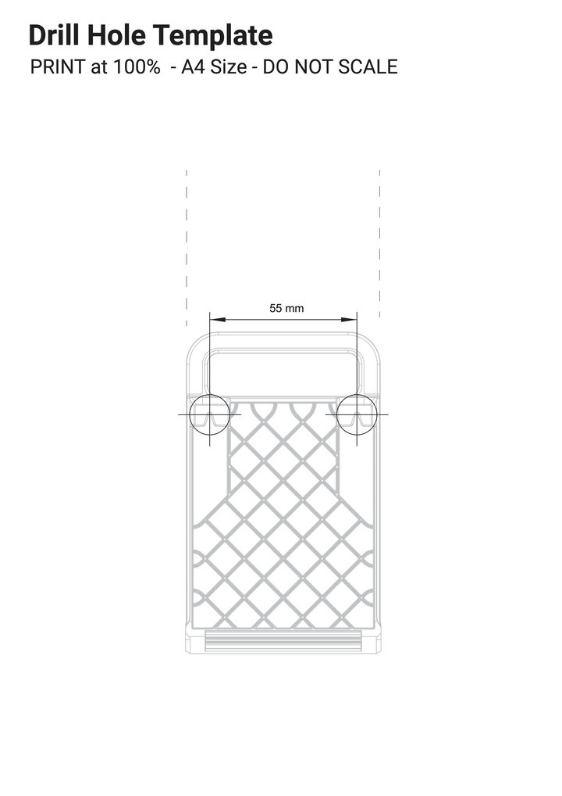

Use the following approaches to position the Monitor:
Mount the Monitor on an arm or stand using the four VESA mount holes on the back of the red rear plastic housing.
Use spacers to ensure adequate space for display and power cable egress.
Flip the integrated stand fully upwards, towards the top of the monitor. Use the drill hole template to create two mounting points spaced 55 mm apart. Hang the Monitor using the slots on the back of the integrated stand.

Figure 1. Drill hole template
Related topic: